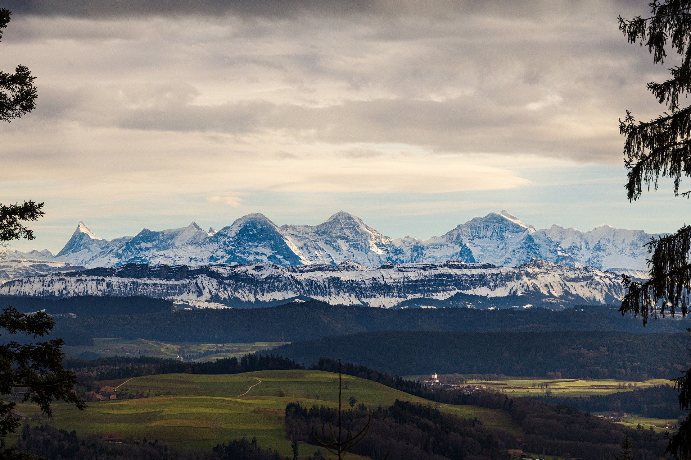
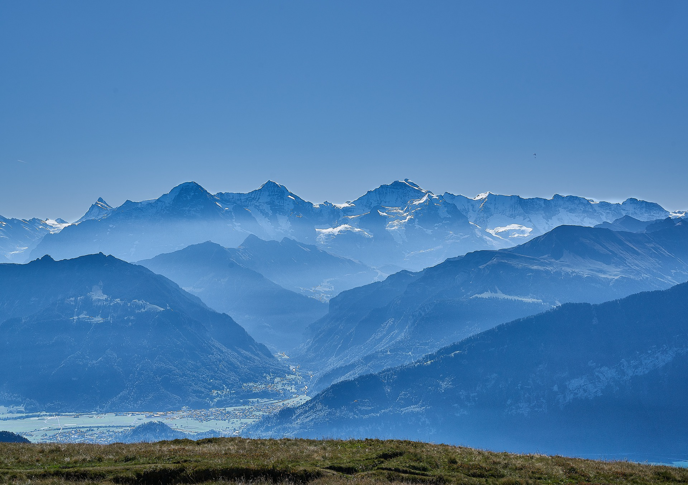
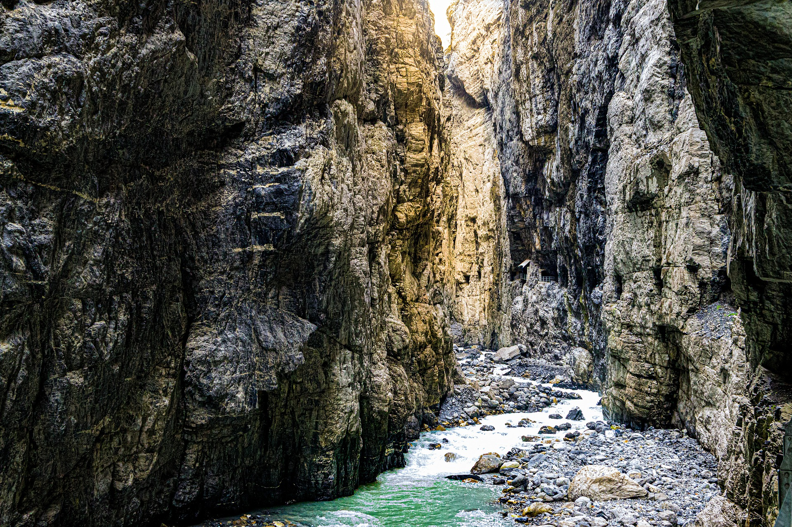
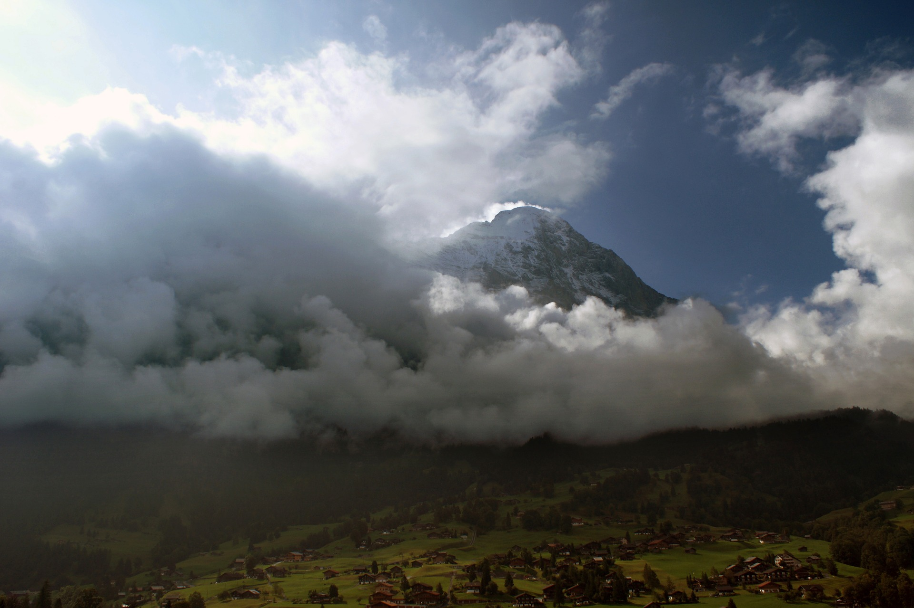
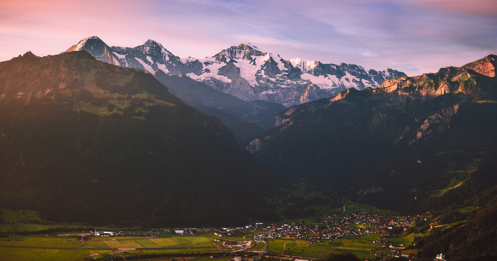
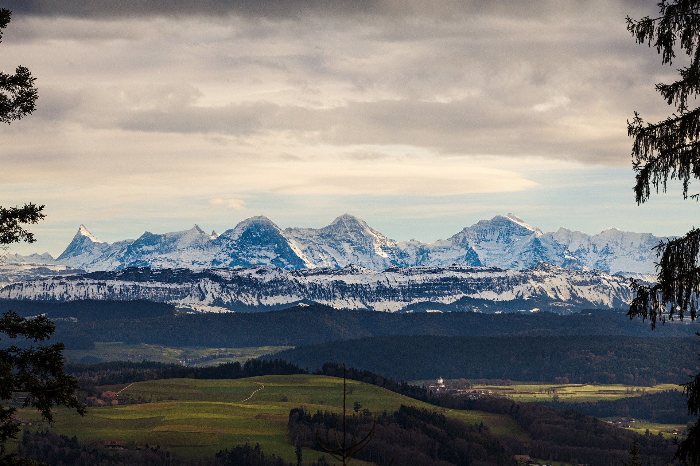
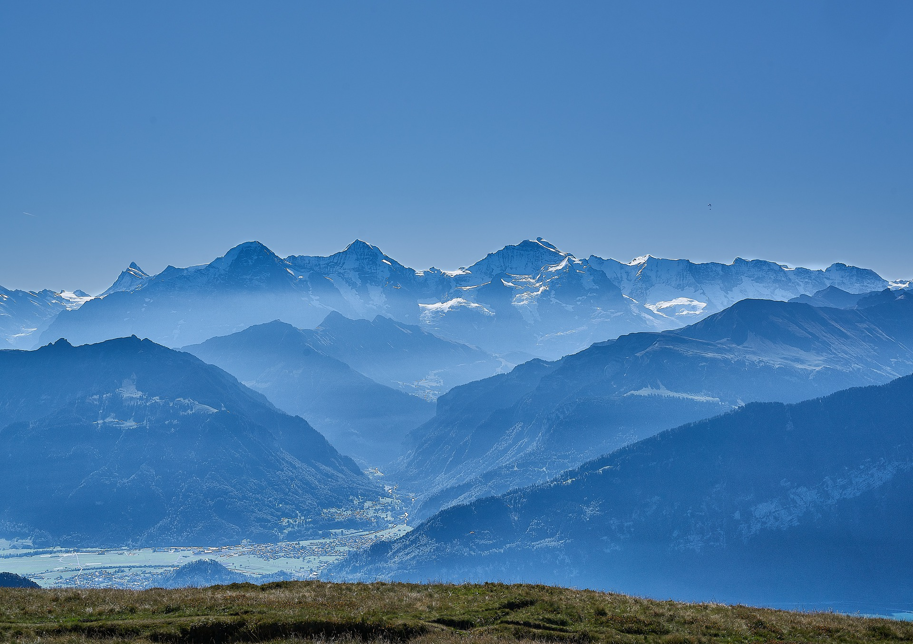
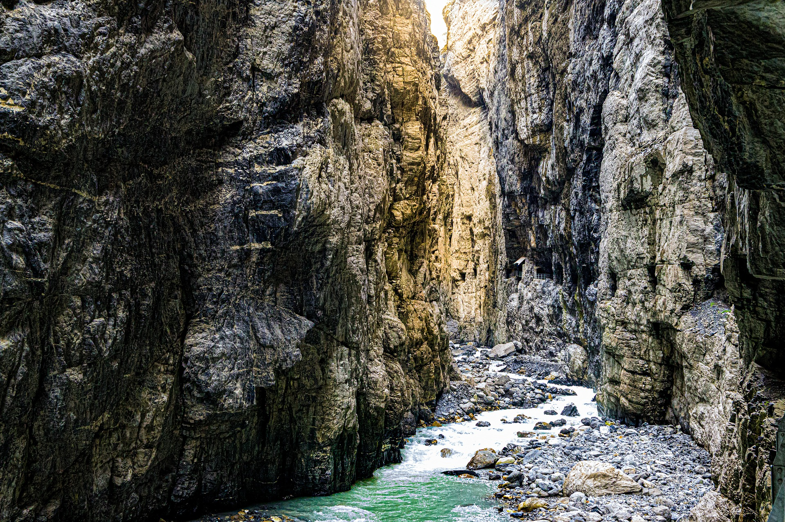
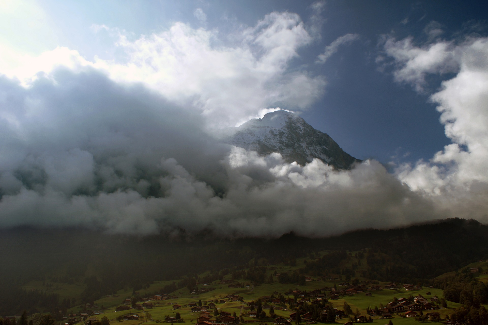
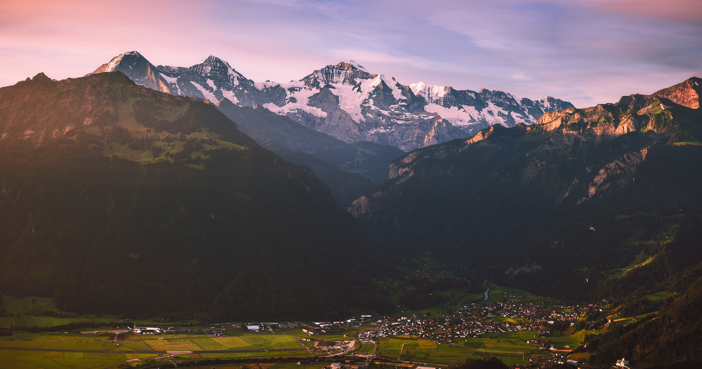

The Eiger
Explore the MountainsThe Mountain
Because of its famous north face, the Eiger is one of the most famous and written about peaks in the world. The battle to climb this face has captivated the interest of climbers and non-climbers alike since the time of the first note worthy attempt in 1934. The Eiger is a striking peak from all sides and a worthy climb by any of its many routes, none of which are particularly easy. The easiest way to the summit is via the West Flank & West Ridge, which is a very complex route of about the same level of difficulty as the Hörnli Arête on the Matterhorn with rock pitches up to III and ice to 40 degrees. Charles Barrington with Christian Almer and Peter Bohren made the first ascent of the Eiger via the West Flank & West Ridge on 11 August 1858.
The Eiger is located in the Jungfrau Region of the Berner Oberland. It is normally reached from Interlaken via either Grindelwald or Lauterbrunnen. The starting points of all the routes can be reached by train from either of these towns. A mountain railway goes to Kleine Scheidegg via Alpiglen from Grindlewald and via Wengen from Lauterbrunnen. The famous Jungfrau Railway which accesses Eiger Glacier & Eismeer Stations and the Jungfraujoch starts at Kleine Scheidegg.
Gallery
 









The Routes
West Flank and West Ridge
AD (G4) with III-, 1650m. 6 hours in ascent, 3 to 4hours in descent
The West Flank & West Ridge is the easiest route to the summit and the usual descent route for most parties. Route finding on the lower part of the flank can be very difficult, especially in descent if one has not gone up this way initially. Though not that technically difficult it is a big high alpine tour that can be especially serious in poor weather or conditions. Recommended equipment is an ice axe, crampons, 2 ice screws, 2 pitons (or nuts / cams) and 4 to 5 carabiners. There are fixed iron rods on the upper part of the route. Charles Barrington with Christian Almer and Peter Bohren, , made the first ascent of the West Flank & West Ridge on 11 August 1858 (also the first ascent of the peak).